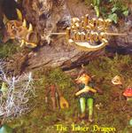

| Artist: | Silver Lining |
| Title: | The Inner Dragon |
| Label: | Musea FGBG 4558.AR |
| Length(s): | 61 minutes |
| Year(s) of release: | 2004 |
| Month of review: | [01/2005] |
| 1) | Fall 2.38 | |
| 2) | Overture | 2.32 |
| 3) | Opaline | 9.25 |
| 4) | The Morning Dew | 6.02 |
| 5) | Castaways | 5.32 |
| 6) | The Inner Dragon | 9.23 |
| 7) | The Desert Gates | 4.00 |
| 8) | A Powerful Wand | 3.42 |
| 9) | (including Years) | 3.14 |
| 10) | Lovestalgia | 3.56 |
| 11) | The Feast | 1.56 |
| 12) | Finale | 8.29 |
The Morning Dew is essentially quite similar: heavy and melodic passage alternate, with the violin and this time also the bass figuring quite prominently too. This song sounds more 'jammed', with the violin becoming quite active at times and the keyboards doing their bit of soloing as well. Castaways has a typical Clive Nolan melody (first Strangers On A Train album). This and some Minimum Vital combined with the catchiness of neo-prog from the SI bands is what we obtain here.
The Inner Dragon is another lengthy track, quite up-beat at times and with a nice flow. Fans of Landmarq ought to like this, although there are not many vocals. Since the vocals are not without accent, and the story itself is a fantasy tale, there might be people who view this as an advantage. Note though that beneath the fantasy tale is a story about death, love, friendship and violence (which is, I have been told, our inner dragon). The acoustic guitar and flowing violin lines add there melodic and soothing touch.
Past halfway we come to The Desert Gates. This song does not really fir in well with the rest. It has those Arabic chants (so well-known from overly commercial New Age albums). Chancey. On the other hand, A Powerful Wand, is a very commercial sounding piece and the band does not come away unscathed. When you do something like this, it ought to make a splash, and it does not come off as blistering as I would have hoped. The second part is more distinctive again with some nice guitar soloing, but also some more funky guitar work.
Lovestalgia opens with some nice melodies. The vocal chorus is rather up-beat and I am not sure about the lyrics here. Maybe they are a bit too open, too direct. But the band rocks away quite nicely, thank you. The Feast is a short interlude before the finale. Crackling firewood and acoustic guitar make for a Genesis feel, after which we run right into Finale, the lengthy closer. Time to build things up here, with repetitive guitars setting in. Time for the players to showcase their instrument. On the whole an up-beat piece. The result is a bit of a meandering piece with some good moments, but sometimes sounds more like a spun out version of a composition. The dragon has the last word.